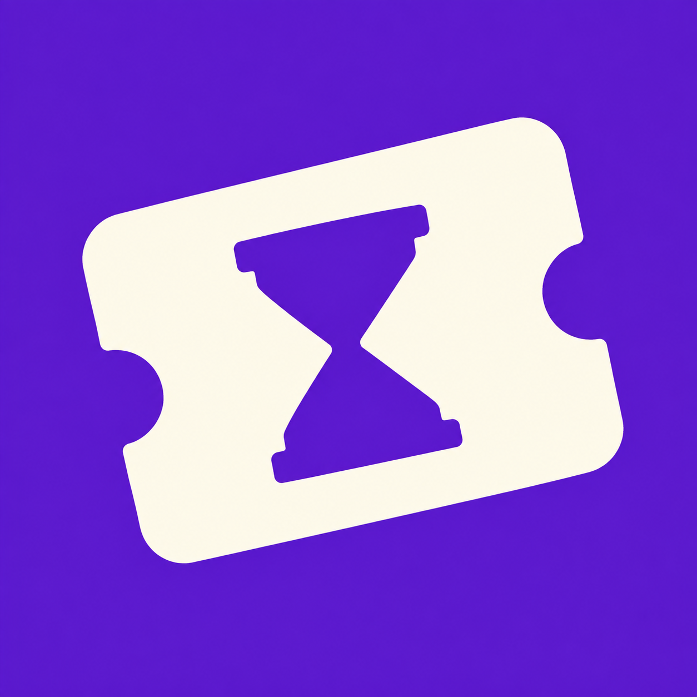
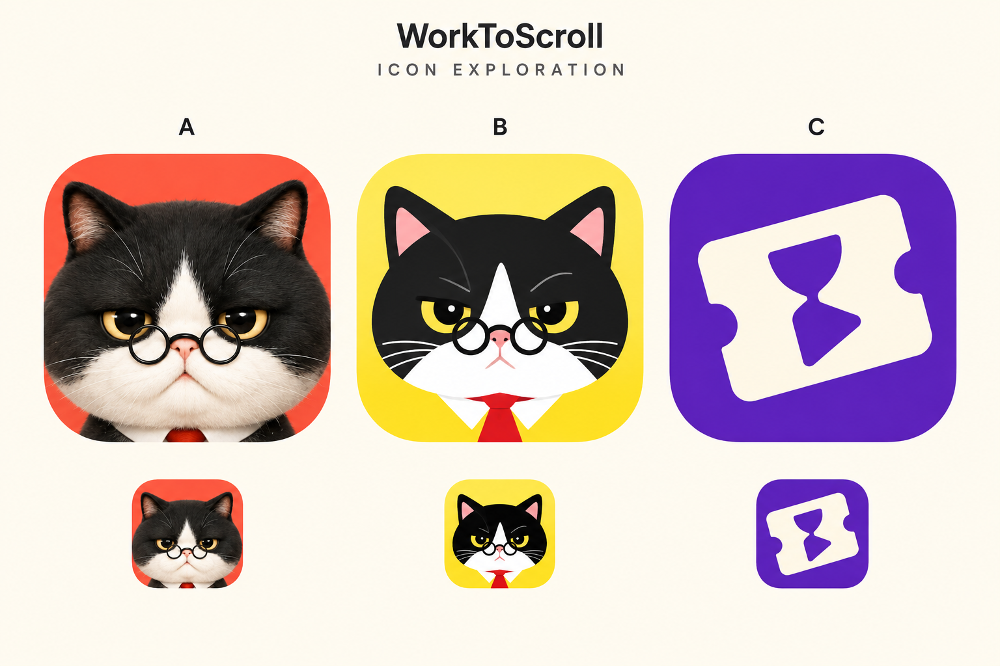

APP ICON ARCHIVE · 2026.09.08 · 标准沙漏已采用，其余为备选
当前采用：C 标准沙漏修正版。
Roy 已确认先使用这版。紫底与暖白票券保留，沙漏改为两端对应、收腰清楚的标准形状；已进入 0.3.3-hourglass-icon 并覆盖安装。下方其他方案归档为备选，不自动切换。

内置 imagegen 编辑稿，已目视检查大图；尚未经过真实手机启动器验收。
备选归档：C2 / C3
C2 · 时间环＋播放键
时间与娱乐的组合更直接，轮廓简洁；风险是接近普通计时或播放器图标。
C3 · 完成后获得娱乐票券
更延续原 C 的票券身份，对勾与播放箭头合为一个图形；工作换娱乐的含义仍需首次理解测试。
新增两图由内置 imagegen 分别生成，小图为浏览器 64/48 CSS 像素显示，尚未经实际手机启动器验收。
旧图标参考：深绿色底＋白色时钟
按旧 Android 资源复现；桌面图标已替换，原资源继续供通知使用。这里不是手机启动器截图。
同类图标：四种可借鉴的方法
图像来自官方品牌页或 App Store 的公开图像样本，需联网加载；商店、版本与系统主题可能不同。以下不是市场占比或效果排名。

Opal
抽象品牌符号
黑底、白色不规则环。可以借鉴强反差与单一轮廓；用途主要由名称和后续体验建立。
官方品牌资料 ↗
ScreenZen
平静与平衡意象
深底配蓝紫色叠石。也能检索到圆环旧样本，不能混称同一版本；可借鉴少量大形状。
商店来源 ↗
Forest
成长与成果意象
绿色幼苗＋土壤。图标呼应种树的产品体验，可以借鉴“让主机制留下一个画面”。
商店来源 ↗
Focus Friend
角色＋功能提示
豆子角色搭配沙漏。最接近猫总路线：先记住角色，再在使用中理解它的作用。
商店来源 ↗
备选归档：首轮 A / B / 原 C
由内置 imagegen 基于现有猫总素材制作。下排为生成的小图示意，并非精确缩放测试。字母只标识候选，不进入应用图标。

首轮参考A · 立体猫总
适合继续以猫总作为主要体验。与首页同一角色，橙底、黑白脸和金色眼睛形成反差。
若恢复此方向：减少毛发细节，强化眼镜和眼神。风险是缩小后细节糊成一团，或像宠物应用。
B · 扁平猫总
适合希望图标更简练、便于延展到小尺寸的方向。黄色底与黑白大轮廓醒目。
下一步：放松眉眼，保留严肃与冷幽默。这一稿偏凶，也与首页写实风格有距离。
C · 时间兑换券
适合希望品牌不依赖猫总、以后容纳其他监督角色的方向。票券、沙漏与播放符号尝试表达“赚取娱乐时间”。
下一步：测试能否看出兑换含义。现在仍可能被看成普通计时或票务工具。
选定后怎样判断是否有效
放到实际手机桌面，与常用应用并排，检查浅色/深色壁纸、启动器裁切，以及 48px、64px 的眼神与轮廓。让第一次见的人看几秒，观察是否能记住并重新找到。若只记住“一只普通猫”、需要放大才能辨认，或圆形裁切损坏主体，就继续简化。